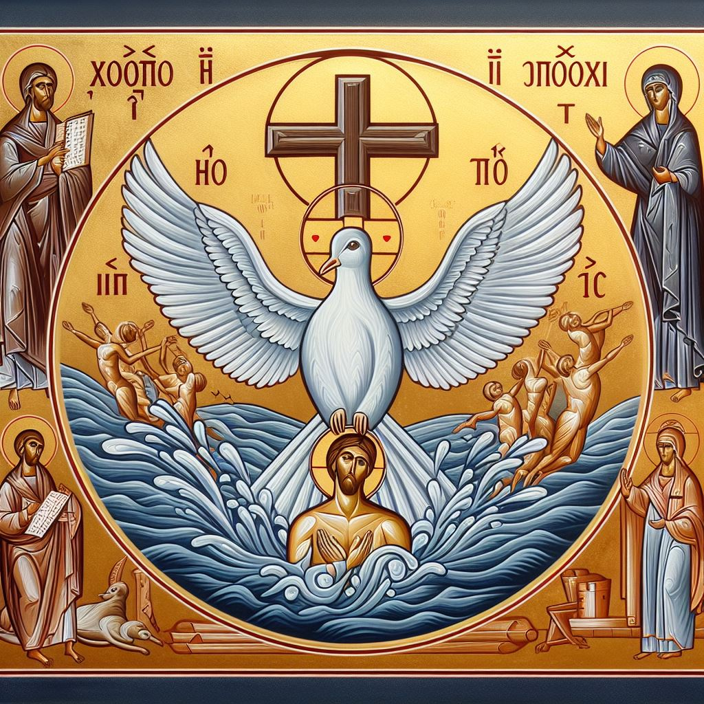
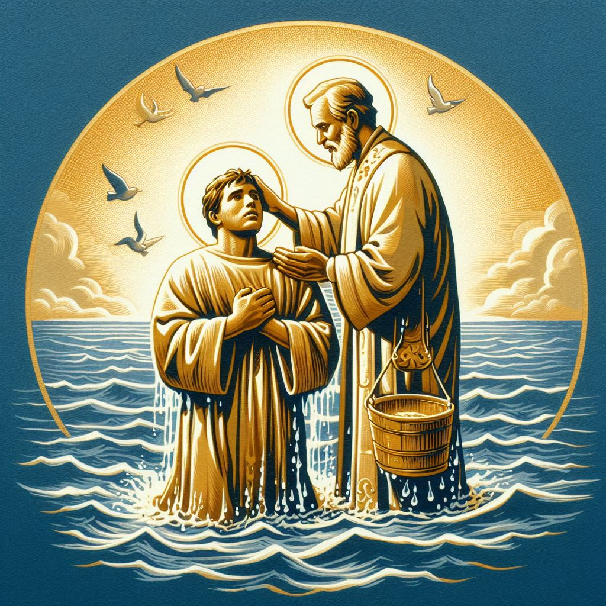
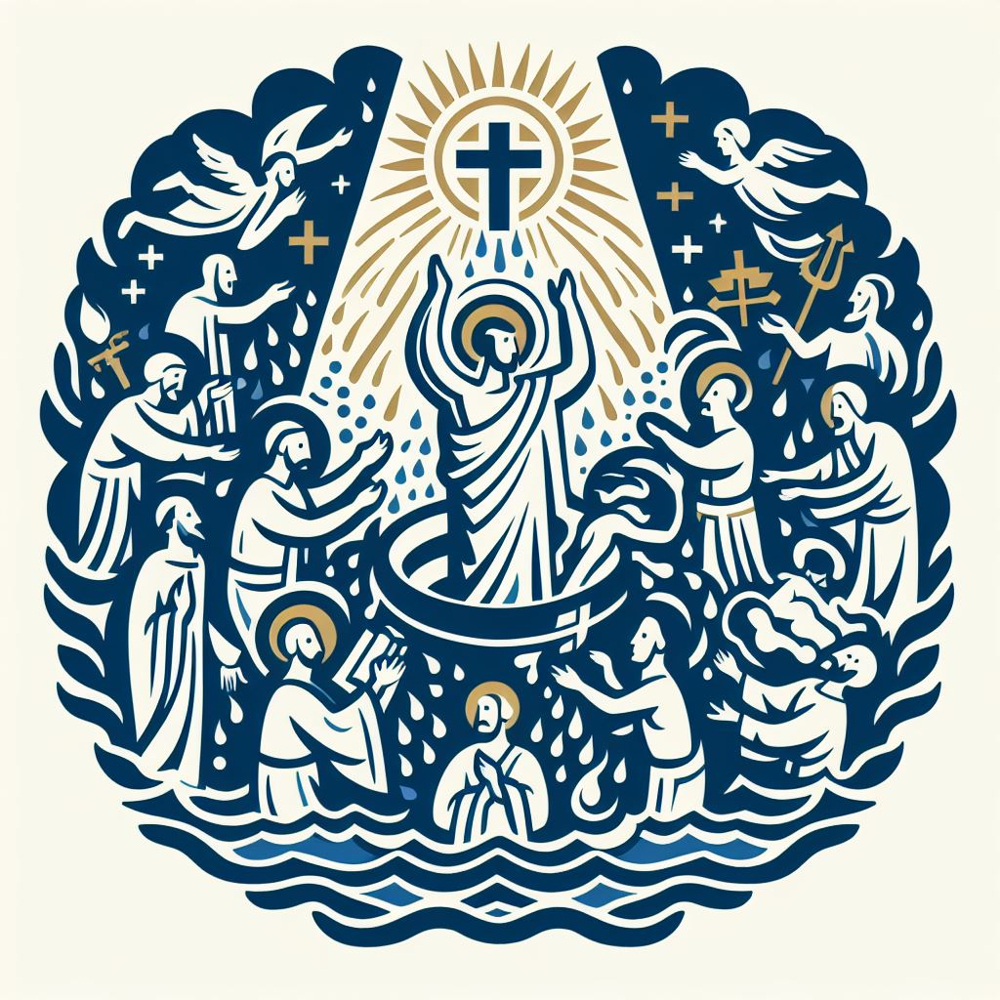

# Baptism
Catholic Perspective, adapted by Ingmar Bitter
## The Meaning of Baptism

Baptism, instituted by the Lord and commanded in Matthew 28:19, is not merely a public declaration; it is God’s own act that regenerates, forgives sins, and incorporates the person into Christ and His Church. In Baptism, God infuses sanctifying grace, gives the Holy Spirit, and unites the baptized to Christ’s death and resurrection. It is an ontological transformation and a sacramental participation in Christ, not merely a psychological milestone.
Baptism is the sacrament of rebirth in water and the Holy Spirit, by which one becomes a member of Christ’s Body (1 Cor 12:13). It is ordinarily necessary for salvation because Christ made it the normative means by which we receive the grace He won on the Cross. God can act extraordinarily by grace (e.g., baptism of desire/blood), but He has promised and commanded to act ordinarily through this sacrament.
!!!
Go therefore and make disciples of all nations, baptizing them in the name of the Father and of the Son and of the Holy Spirit
- Mat 28:19 MEV
As disciples of Jesus, we obey His command to baptize. For adults, Baptism completes initial conversion by uniting obedient faith to the sacrament Christ instituted. For infants and those incapable of rational assent, Baptism communicates the same saving grace by God’s initiative, with the Church’s faith speaking on their behalf, so that none are excluded from the saving will of God (1 Tim 2:4).
Baptism is also profoundly symbolic, and its signs truly signify what they effect:
* Going into the water: we are united to Christ’s death for our sins; the old man, enslaved to sin, is judged in Christ.
* Under the water: we are buried with Christ; our guilt is washed away by the application of His atonement; we die to sin’s dominion.
* Emerging from the water: we rise with Christ to new life; we are regenerated, forgiven, beloved, and adopted in the Son by the gift of the Holy Spirit.
!!!
Do you not know that we who were baptized into Jesus Christ were baptized into His death? Therefore we were buried with Him by baptism into death, that just as Christ was raised up from the dead by the glory of the Father, even so we also should walk in newness of life.
- Rom 6:3-4 MEV
!!!
And you, being dead in your sins and the uncircumcision of your flesh, He has resurrected together with Him, having forgiven you all sins.
- Col 2:12 MEV
### Baptism by Full Immersion

There are strong biblical and symbolic reasons to prefer or commend full immersion where feasible: it vividly manifests burial and rising with Christ, and the verb baptizo commonly denotes immersion. At the same time, the Church—charged by Christ to teach and administer the sacraments—recognizes pouring (affusion) and sprinkling (aspersion) as valid forms, since the essence of the sacrament is the washing with water and the Trinitarian formula, not the quantity or mode of water used. Early Christian witnesses (e.g., the Didache) attest such flexibility for pastoral reasons.
**Symbolism Alignment:** Immersion most visibly expresses Romans 6:3–4, but all valid forms signify the same grace: union with Christ’s paschal mystery.
**Jesus’ Example and Apostolic Practice:** Jesus was baptized in the Jordan. The apostolic Church baptized in rivers and other waters; forms varied by circumstance, but the sacrament’s reality remained the same.
!!!
9 In those days Jesus came from Nazareth in Galilee and was baptized by John in the Jordan. 10 Coming up out of the water, He immediately saw the heavens opened and the Spirit descending on Him like a dove.
- Mark 1:9-10 MEV
!!!
The whole region of Judea and all the people of Jerusalem went out to him [John the Baptist] and were all baptized by him in the Jordan River, confessing their sins.
- Mark 1:5
!!!
John also was baptizing in Aenon toward Salim, because much water was there. And people came and were baptized.
- John 3:23
!!!
36 As they went on their way, they came to some water. And the eunuch said, “Look, here is water. What hinders me from being baptized?” 37 Philip said, “If you believe with all your heart, you may.” He answered, “I believe that Jesus Christ is the Son of God.” 38 And he commanded the chariot to halt. Then both Philip and the eunuch went down into the water, and he baptized him.
- Acts 8:36-38
**Humble Submission and Personal Encounter:** Baptism is a humbled surrender to God’s saving action and a transformative encounter with Christ that confers the grace it signifies. Immersion can deepen the sign; valid alternative forms still convey the same sacramental reality.
## The Significance of Baptism for Believers
Baptism is commanded by Christ (Mat 28:19) and is the ordinary means appointed by God to communicate regeneration and the Holy Spirit. It is the sacrament that incorporates us into Christ and His Church (1 Cor 12:13), making us members of His Mystical Body. It is thus ordinarily necessary for salvation: God binds us to the sacrament, though He Himself is not bound by it.
!!!
Go therefore and make disciples of all nations, baptizing them in the name of the Father and of the Son and of the Holy Spirit
- Mat 28:19 MEV
For adults, the sacrament publicly manifests and completes their conversion, uniting obedient faith to Christ’s saving act. For Jewish converts then, and many converts now, baptism also bears social cost; yet the grace of incorporation into Christ exceeds the loss.
## Baptism at the Time of Committing to Christ
In the New Testament, adults who come to faith are ordinarily baptized promptly. The Church, from the beginning, also baptized households, which plausibly included children; and she continues to baptize infants as an expression of God’s prevenient grace and the Church’s faith. For adults, immediate baptism may follow initial catechesis or extraordinary circumstances; for catechumens, the Church prepares them for the sacrament while encouraging a firm intention to receive it.
Examples of immediate baptism:
**The Day of Pentecost (Acts 2:41):** About three thousand believed and were baptized.
!!!
Then those who gladly received his word were baptized, and that day about three thousand souls were added to them.
- Acts 2:41 MEV
**The Ethiopian Eunuch (Acts 8:36-38):** On professing faith, he was baptized.
!!!
As they went on their way, they came to some water. And the eunuch said, “Look, here is water. What hinders me from being baptized?” Philip said, “If you believe with all your heart, you may.” He answered, “I believe that Jesus Christ is the Son of God.” And he commanded the chariot to halt. Then both Philip and the eunuch went down into the water, and he baptized him.
- Acts 8:36-38 MEV
**Saul/Paul (Acts 9:1-18):** Having encountered Christ and received the Spirit through Ananias’ ministry, he was baptized at once.
!!!
Immediately something like scales fell from his eyes, and he could see again. And he rose up and was baptized.
- Acts 9:18 MEV
**Cornelius (Acts 10:44-48):** After the Spirit fell upon them, Peter commanded Baptism, showing the sacrament’s necessity even when God acts extraordinarily.
!!!
47 “Can anyone forbid water for baptizing these, who have received the Holy Spirit as we have?” 48 So he commanded them to be baptized in the name of the Lord. [...]
- Acts 10:47-48 MEV
**Lydia (Acts 16:14-15):** She believed, and she and her household were baptized.
!!!
14 A woman named Lydia, a seller of purple fabric of the city of Thyatira, who worshipped God, heard us. The Lord opened her heart to acknowledge what Paul said. 15 When she and her household were baptized, she entreated us, saying, “If you have judged me to be faithful to the Lord, come to my house and remain there.” And she persuaded us.
- Acts 16:14-15 MEV
**Philippian Jailer (Acts 16:30-33):** He believed and was baptized with his household—at once.
!!!
30 He then led them out and asked, “Sirs, what must I do to be saved?” 31 They said, “Believe in the Lord Jesus Christ, and you and your household will be saved.” 32 And they spoke the word of the Lord to him and to all who were in his household. 33 In that hour of the night he took them and washed their wounds. And immediately he and his entire household were baptized.
- Acts 16:30-33 MEV
## Delayed / Missed Baptism
Baptism is commanded and ordinarily necessary. Adults who come to faith should not delay Baptism. When prior misunderstandings delayed Baptism, the person should be baptized as soon as possible. If death or impossibility intervenes, the Church holds that baptism of desire (explicit or implicit) can suffice by God’s mercy; yet the sacrament must not be neglected when it can be received.
## Considering Rebaptism
There is one Baptism (Eph 4:5). Valid Christian Baptism—administered with water and the Trinitarian formula—may never be repeated. If a person doubts whether he was truly baptized, the Church may use conditional Baptism. Post-baptismal sin does not warrant rebaptism; rather, repentance and sacramental Reconciliation restore grace (see Acts 8:14-24 as a call to repentance).
!!!
14 Now when the apostles who were at Jerusalem heard that **Samaria had received the word of God**, they sent Peter and John to them. 15 When they came down, they prayed for them that they **might receive the Holy Spirit**, 16 **for still He had come on none of them. They were only baptized in the name of the Lord Jesus**. 17 Then **they laid their hands on them, and they received the Holy Spirit**.
18 When Simon saw that through the laying on of the apostles' hands the Holy Spirit was given, he offered them money, saying, “Give me also this power, that whomever I lay hands on may receive the Holy Spirit.”
20 Peter said to him, “May your money perish with you because you thought you could purchase the gift of God with money! 21 You have neither part nor share in this matter, for your heart is not right before God. 22 Therefore repent of your wickedness, and ask God if perhaps the intention of your heart may be forgiven you. 23 For I see that you are in the gall of bitterness and in the bond of iniquity.”
24 Then Simon answered, “Pray to the Lord for me that nothing you have spoken may come upon me.”
- Acts 8:14-24 MEV
## Baptism as a Unifying Force Among Believers

“There is one Lord, one faith, one Baptism” (Eph 4:5). Trinitarian Baptism creates a real bond of unity among Christians. The Catholic Church recognizes as valid the Baptisms of many ecclesial communities. Christ prayed for unity (John 17:20–23); Baptism grounds our ecumenical hope and summons all the baptized toward full communion in truth and charity.
!!!
2 With all humility, meekness, and patience, bearing with one another in love, 3 be eager to **keep the unity** of the Spirit in **the bond of peace**. 4 There is one body and one Spirit, even as you were called in one hope of your calling, 5 one Lord, one faith, **one baptism**, 6 one God and Father of all, who is above all, and through all, and in you all.
- Ephesians 4:2-6 MEV
!!!
20 “I do not pray for these alone, but also for those who will believe in Me through their word, 21 that **they may all be one**, as You, Father, are in Me, and I in You. May **they also be one in Us**, that the world may believe that You have sent Me. 22 I have given them the glory which You gave Me, that **they may be one** even as We are one: 23 I in them and You in Me, that **they may be perfect in unity**, and that the world may know that You have sent Me, and have loved them as You have loved Me.
- John 17:20-23 MEV
## No State of Limbo between Belief and Baptism
What of those who come to faith but die before Baptism or who, through no fault of their own, never receive it? The Church distinguishes the ordinary necessity of Baptism from God’s extraordinary mercy. Baptism of desire (explicit or implicit) and baptism of blood avail; God is not bound by His sacraments, though we are bound to them. We therefore urge prompt Baptism while trusting God’s justice and mercy in each case.
Two famous cases—Billy Graham (baptized after a delay) and C. S. Lewis (unbaptized after coming to faith)—would be discussed in terms of desire: explicit in Graham’s case (completed in Baptism), and, in Lewis’ case, at most implicit. We do not presume on God’s mercy, but we hope in it, without relativizing the Lord’s command to baptize.
There are four interpretation options often proposed:
- #1 Necessary requirement (ordinary norm): Baptism is ordinarily required for salvation because Christ instituted it as the means of new birth.
- #2 Only God knows (epistemic humility): Where Scripture is silent on specific cases, we trust God’s judgment.
- #3 Exceptions by God’s mercy: Baptism of desire/blood are real, traditional exceptions grounded in Scripture and Tradition.
- #4 Consequence of salvation: Held by some Christians; this is not the Catholic position.
In sum, the Catholic view is a synthesis of #1 (as the ordinary norm), with #2 and #3 clarifying God’s freedom in extraordinary cases. For ordinary cases, the live alternatives under discussion are #1 and #4. In the next section we compare their strengths and weaknesses in light of what Scripture teaches.
## Baptism: Necessary-Requirement-For or Consequence-Of Salvation
There is a difference between commands given to disciples and the salvific means ordained by God. In the Great Commission, Jesus specifies the ordinary pattern of disciple-making under the New Covenant: proclamation, Baptism, and formation in obedience.
#### Matthew 28:19-20 The Great Commission
!!!
19 Go therefore and make disciples of all nations, baptizing them in the name of the Father and of the Son and of the Holy Spirit,
20 teaching them to observe all things I have commanded you. [...]
From a Catholic perspective, this is not merely a to-do list but a sacramental economy: God binds saving grace to visible means. The “package” of evangelization, Baptism, and life-long formation is the normative mode by which Christ applies His saving work to persons. Good works flow from grace, yet Baptism is not in the same category as post-justification works; it is the means of entry by which we are justified, regenerated, and incorporated into Christ.
Is Baptism a necessary requirement for salvation or a consequence of salvation? The Catholic answer is: ordinarily necessary. Faith is absolutely necessary; and in God’s design, faith is perfected and made fully efficacious through Baptism—“faith working through love” (Gal 5:6) receives its sacramental form. Scripture sometimes speaks of faith without enumerating every implied element; at other times it speaks of Baptism as effecting salvation. Both are true together in the ordinary case; desire can suffice extraordinarily.

Both readings agree on a common conversion sequence: hearing the Gospel, faith, repentance, Baptism, and lifelong discipleship. They differ on where to locate God’s saving application of Christ’s paschal mystery within that sequence.
From a Catholic perspective, in the ordinary course God sacramentally applies saving grace in Baptism: for adults, Baptism follows obedient faith and repentance; for infants and those lacking reason, prevenient grace and the Church’s faith dispose them to receive the same gift. Scripture also records salvation-historical exceptions (e.g., Cornelius), and the Church recognizes desire/blood as extraordinary modes that do not replace the norm.
Biblically, some texts speak simply of faith as the condition (e.g., Jn 3:16; Eph 2:8–9) without listing the sacramental response; others speak of Baptism as the instrumental means (Acts 2:38; Rom 6; 1 Pet 3:21). The Catholic synthesis reads these not as competing but as complementary witnesses within the one economy Christ instituted.
With this framing, we can contrast the two interpretive patterns as follows:
**Baptism-completes-faith (necessary requirement, ordinary case):** Baptism is the divinely instituted occasion and instrument by which Christ’s atoning death and resurrection are applied to the believer. The sacrament is not a meritorious work; it is God’s action through a visible sign. For adults, obedient faith prepares and disposes the soul; in Baptism, God regenerates, forgives, gives the Spirit, and incorporates into the Church. This is why Scripture can say, without contradiction, that “baptism now saves you” (1 Pet 3:21), that we are “buried with him by baptism” (Rom 6:4), and that we “put on Christ” in Baptism (Gal 3:27).
**Obedient-faith (baptism as consequence):** When one has true, obedient faith—that Jesus is the divine Lord who died, was buried, rose, and reigns; that I have personally sinned and am under just condemnation; that I repent and trust His atoning death to clear my guilt—and I commit to make Him my Lord and to follow His commands—then God saves by applying Christ’s sacrifice and giving the indwelling Spirit. Baptism then follows as the first public step of obedience and solemn witness. Refusal to be baptized raises serious doubt about the authenticity of faith. Note the distinction between a sincere commitment to obey and a subsequent track record of obedience: on this view, saving faith may precede the first outward act, which Baptism then seals publicly; Baptism itself is not a meritorious work but a commanded sign that flows from salvation.
#### Roadmap
We first consider Spirit versus water Baptism, then passages that emphasize faith, and finally those that emphasize Baptism. The *baptism-completes-faith* reading holds these together: faith is necessary, and Baptism is God’s ordinary instrument by which faith receives what it seeks. The variations in timing in Acts are interpreted within the sacramental economy (Baptism and Confirmation). For fairness, we also present the interpretations and commentary of the *obedient-faith* reading alongside.
#### Statement of challenges
To maintain the *baptism-completes-faith* view (necessary in the ordinary case), one must:
* Read “faith-alone” summaries as synecdoches that presuppose the sacramental response Christ commanded, not as exhaustive lists excluding Baptism.
* Recognize Acts’ variations in timing as salvation-historical developments and as distinguishing Baptism and the laying on of hands (Confirmation), not as denials of the sacramental economy.
* Affirm that God’s prevenient grace enables adult candidates freely to present themselves for Baptism; grace precedes and empowers the response.
The *obedient-faith* view must:
* Reinterpret or minimize texts that attribute salvific effect to Baptism (Acts 2:38; 1 Pet 3:21; Rom 6), or reduce the sacrament to symbol rather than God’s instrumental action.
#### Assessment of challenges
*baptism-completes-faith:* The Catholic synthesis is simpler: Scripture sometimes names faith as the condition (without listing all that faith implies), and elsewhere explicitly attributes salvation to Baptism. These are not contradictory when we remember that Christ ordained a sacramental economy. The Acts narratives reflect unique moments (Jews, Samaritans, Gentiles) and the distinction between Baptism and Confirmation, while the doctrinal texts teach Baptism’s saving efficacy. Extraordinary cases (desire/blood) confirm God’s freedom without overturning the norm.
*obedient-faith:* In comparison, there are fewer and less challenging hurdles for the *obedient-faith* view than the *baptism-completes-faith* view.
Both perspectives must **assume unstated conditions are implied**, but the reasonableness of these assumptions differs significantly. It is clear that sincerely deciding to be baptized implies having obedient faith. However, having some faith does not as clearly imply a desire to be baptized. Baptism marks the end of the conversion process, which begins with faith in God's existence and authority. This is followed by conviction of our sin guilt, repentance for our sins, faith in Jesus as savior, faith in Jesus as Lord to whom we are accountable, decisions on how to act differently, and then the decision to be baptized, culminating in the actual baptism. Faith produces all these steps, and each one is a sufficient condition for the ones before it. However, they are not all instantaneous. We take time to progress through the stages. **The question is where along the progression the state of saving faith is reached**. Proposing that it is only reached during the act of baptism is more of a stretch than placing it before the decision to be baptized.
Furthermore, regarding the *reasonableness of assuming unstated conditions*, this progression over time shows the asymmetry between the two needed assumptions. *Obedient-Faith* assumes that when the last step alone is mentioned as producing salvation, earlier steps have already happened, which is reasonable. But *baptism-completes-faith* must assume that when the first step alone is mentioned as producing salvation, all of the later steps have also already occurred. That is much less reasonable - especially when the verse is not talking about mature Christians, but telling us what the requirement for salvation is.
Asserting that faith produces repentance, trust in Christ and the desire to be baptized without being saving faith and then, **during the baptism, that faith is upgraded to saving faith,** is a complicated explanation that has no scripture backing it up, but it is needed to maintain consistency of the *baptism-completes-faith* view.
The issue for baptism-completes-faith that all given examples of baptisms are **exceptions to the rule** is also hard to explain away. The typical explanation offered is that those were special occasions because they were the first time when a special category of people became a Christian, such as the apostles, Gentiles, Samaritans, etc. But especially in the inaugural event, the one that sets the example to follow, the rule should be demonstrated, not broken. And if the rule was broken in all inaugural events, then it seriously puts into question if there is such a rule.
It is completely fine to see the baptism as an event that strengthens our faith. Throughout the sanctification process, as we mature as Christians, there will be many things that strengthen our faith, and our baptism may very well be the event that increases our faith more significantly than anything else afterward. Nonetheless, that does not mean, that our faith is insufficient to be saving faith before the baptism. Initially, it just has to be the size of a mustard seed to be effective, and it can grow into something much larger over time.
Next, let's see how these assessments resonate with scripture.
### Spirit Baptism versus Water Baptism
**Spirit Baptism:** The gift of the indwelling Holy Spirit. In the ordinary sacramental economy, the Spirit is given in and through Baptism (and strengthened in Confirmation). Acts exhibits non-simultaneity at key transitional moments to reveal the Gospel’s expansion and the apostolic ministry’s unity.
#### Romans 8:9 Spirit in you yes/no => belong to Christ yes/no
!!!
9 You, however, are not in the flesh but in the Spirit, if indeed the Spirit of God lives in you. Now if any man does not have the Spirit of Christ, he does not belong to Him. -MEV
The Spirit’s indwelling identifies those who belong to Christ. Baptism is the normative moment of this gift (Acts 2:38; Titus 3:5), while Acts records certain mission-critical exceptions.
#### Acts 9:17-19 Holy Spirit for Paul before water baptism
!!!
17 So Ananias left and entered the house. Then he placed his hands on him and said, “Brother Saul, the Lord Jesus, who appeared to you on the road you were traveling, has sent me so that you can regain your sight and be filled with the Holy Spirit.”
18 At once something like scales fell from his eyes, and he regained his sight. Then he got up and was baptized. 19 And after taking some food, he regained his strength.
* *obedient-faith:* The laying on of hands and prayer was for being filled with the Holy Spirit. After that was accomplished Paul was baptized. Hence, the Holy Spirit was not received during water baptism - fitting with obedient-faith, not baptism-completes-faith.
* *baptism-completes-faith:* God can act extraordinarily for the Apostle to the Gentiles: the Spirit’s gift precedes Baptism as a sign of Paul’s unique mission. Yet even here, Baptism immediately follows because Christ’s command remains binding. The exception proves the norm: apostolic grace does not negate the sacrament.
#### Acts 10:44-48: Holy Spirit for Cornelius before water baptism
!!!
44 While Peter was still speaking these words, the Holy Spirit fell on all those who heard the word. 45 All the believers of the circumcision who had come with Peter were astonished because the gift of the Holy Spirit had been poured out even on the Gentiles. 46 For they heard them speaking in other tongues and magnifying God. Then Peter continued, 47 “Can anyone forbid water for baptizing these, who have received the Holy Spirit as we have?” 48 So he commanded them to be baptized in the name of the Lord. Then they asked him to stay a few days.
* *obedient-faith:* sees this as a typical salvation account where baptism was right after coming to believe and being filled with the Holy Spirit. Hence, the Holy Spirit was not received during water baptism - fitting with obedient-faith, not baptism-completes-faith. Note that we must read between the lines to interpret Cornelius's belief as obedient-faith, but based on the context this is reasonable.
* *baptism-completes-faith:* This unique outpouring is a Pentecost-for-Gentiles, demonstrating their full inclusion. Peter immediately commands Baptism, showing that even when the Spirit precedes as a sign, Baptism remains necessary as the sacramental entry Christ established.
#### Acts 18:24-28 Apollos, believer + fervent in spirit, taught about water baptism but was not baptized
!!!
A Jew named Apollos, a native Alexandrian, an eloquent man who was powerful in the use of the Scriptures, arrived in Ephesus. This man had been instructed in the way of the Lord; and being fervent in spirit, he spoke and taught the things about Jesus accurately, although **he knew only John's baptism**. He began to speak boldly in the synagogue. After Priscilla and Aquila heard him, **they took him home and explained the way of God to him more accurately**. When he wanted to cross over to Achaia, the brothers wrote to the disciples urging them to welcome him. After he arrived, he greatly helped those who had believed through grace. For he vigorously refuted the Jews in public, demonstrating through the Scriptures that Jesus is the Messiah.
* *obedient-faith:* since Apollos was already a strong believer and filled with the Holy Spirit, Priscilla and Aquila did not insist for him to be baptized in the name of Jesus, however they explained it to him. -- A little strange that they did not insist he needed to be baptized in Jesus name, but at least it makes clear that it was not a salvation issue for Priscilla and Aquila. -- Or they did baptize him in the name of Jesus, but Luke did not see it as important enough to include in his writing, again matching better with obedient-faith than baptism-completes-faith.
* *baptism-completes-faith:* Luke’s silence about the act does not imply its absence. The correction “more accurately” typically included Baptism in Jesus’ name; Acts 19 shows Paul ensuring those with only John’s baptism receive Christian Baptism. The text presumes the sacramental norm without narrating every rite.
#### Acts 19:1-7 Holy Spirit received in Ephesus not during water baptism but after
!!!
1 While Apollos was in Corinth, Paul traveled through the interior regions and came to Ephesus. He found some disciples 2 and asked them, “Did you receive the Holy Spirit when you believed?”
“No,” they told him, “we haven't even heard that there is a Holy Spirit.”
3 “Then what baptism were you baptized with?” he asked them.
“With John's baptism,” they replied.
4 Paul said, “John baptized with a baptism of repentance, telling the people that they should believe in the One who would come after him, that is, in Jesus.”
5 When they heard this, they were baptized in the name of the Lord Jesus. 6 And when Paul had laid his hands on them, the Holy Spirit came on them, and they began to speak in other languages and to prophesy. 7 Now there were about 12 men in all.
* *obedient-faith:* This passage describes both, water baptism in Jesus name and receiving of the Holy Spirit, and they are not happening at the same time, resonating with obedient-faith, not baptism-completes-faith. Still, it is a strange passage, as it describes the people as disciples and believers but apparently, when starting to believe it did not trigger receiving the Holy Spirit. Maybe because their belief was sincere but based on too much false or incomplete information. Then Paul corrected their confusion and after both, the baptism and the laying on of hands, their faith was firm obedient-faith so the Holy Spirit was given.
* *baptism-completes-faith:* This text reveals two sacraments: Christian Baptism (water) and the apostolic laying on of hands (Confirmation). The Spirit is given in the apostolic rite following Baptism—establishing the pattern that the Church maintains. Timing differences here support, not undermine, the sacramental economy.
#### Acts 8:14-17 Holy Spirit received in Samaria not during water baptism but after
!!!
14 When the apostles who were at Jerusalem heard that Samaria had welcomed God's message, they sent Peter and John to them. 15 After they went down there, they prayed for them, so the Samaritans might receive the Holy Spirit. 16 For He had not yet come down on any of them; they had only been baptized in the name of the Lord Jesus. 17 Then Peter and John laid their hands on them, and they received the Holy Spirit.
* *obedient-faith:* This passage describes both, water baptism in Jesus's name and receiving of the Holy Spirit, and they are not happening at the same time, resonating with obedient-faith, not baptism-completes-faith. Still, it is a strange passage, as it describes the people as believers that received the proper water baptism in Jesus's name but apparently, this did not trigger receiving the Holy Spirit. Maybe because their belief was still plagued by doubt and or missing information. Then Peter and John preached to them and during the laying on of hands, their faith was firm obedient faith so the Holy Spirit was given.
* *baptism-completes-faith:* Again, Baptism and Confirmation are distinguished. The apostles’ presence unites Samaria to Jerusalem, avoiding a schism; the Spirit’s coming through their hands manifests ecclesial unity. Far from opposing Baptism’s efficacy, the episode reinforces the two-sakrament structure.
#### Conclusion of Spirit Baptism vs Water Baptism
*obedient-faith:* There is not even one report in Acts in which the Holy Spirit was given during water baptism. Still, when both are reported they are very close in time. So new believers always were baptized right away. That is a pattern we should continue today. Nonetheless, the timing of receiving the Holy Spirit is not linked to baptism, but to the start of having firm obedient faith in Jesus as Lord and Savior. Hence obedient-faith is a better match than baptism-completes-faith.
*baptism-completes-faith:* Acts shows varied timing at key frontiers (Jews, Samaritans, Gentiles) and reveals both Baptism and Confirmation. Doctrinally, the New Testament teaches that Baptism regenerates and gives the Spirit (Acts 2:38; Titus 3:5), while Acts’ narratives illuminate the Church’s sacramental life and unity.
Note also: Acts does not narrate a case where the gift of the Holy Spirit is explicitly said to occur during the water rite itself; the Catholic reading understands these salvation-historical accounts—often also manifesting Confirmation—as exceptions that reveal mission and ecclesial unity, without overturning the sacramental norm that Baptism is the ordinary moment of regeneration and the gift of the Spirit.
### Emphasis on Faith
#### John 3:16 Belief leads to eternal life
!!!
“For God so loved the world that He gave His only begotten Son, that whoever believes in Him should not perish, but have eternal life.
- John 3:16
* *obedient-faith:* This states the conditions for salvation. If water baptism was one of them it should be mentioned, but is not.
* *baptism-completes-faith:* Scripture often names faith as the condition without restating the full sacramental response Christ commanded. John 3 itself pairs faith with new birth “of water and Spirit” (v.5). The Catholic reading holds both: faith is necessary; Baptism is faith’s God-ordained fulfillment.
#### 1 Corinthians 15:1-8
!!!
1 Now, brothers, I declare to you the gospel which I preached to you, which you have received, and in which you stand. 2 Through it you are saved, if you keep in memory what I preached to you unless you have believed in vain. 3 For I delivered to you first of all that which I also received: how **Christ died for our sins** according to the Scriptures, 4 **was buried, rose again the third day** according to the Scriptures, 5 and was seen by Cephas, and then by the twelve. 6 Then He was seen by over five hundred brothers at once, of whom the greater part remain to this present time, though some have passed away. 7 Then He was seen by James and then by all the apostles. 8 Last of all, He was seen by me also, as by one born at the wrong time.
* *obedient-faith:* This passage defines the core of gospel as "Christ died for our sins, was buried and rose again". Baptism is not included, but would be if Paul understood it to be part of the core of the Gospel.
* *baptism-completes-faith:* Paul summarizes the kerygma, not every response it elicits. Elsewhere he explicitly teaches Baptism’s salvific union with this paschal mystery (Rom 6:3–4; Col 2:12). The Gospel is what Christ accomplished; the sacraments are how He applies it.
#### 1 Corinthians 1:14,17: Paul on baptism
!!!
14 I thank God that I baptized none of you except Crispus and Gaius, 15 [...] 16 [...]
17 For Christ did not send me to baptize, but to evangelize [...]
- 1 Corinthians 1:14,17
* *obedient-faith:* If baptism was necessary for salvation, why did Paul say he was thankful he baptized so few people? Why did he say that he was not sent to baptize? If baptism was necessary for salvation, Paul essentially said, “I am thankful I saved so few ...” and “For Christ did not send me to save ...”. That would be an unbelievably ridiculous statement for Paul to make. (See https://www.gotquestions.org/baptism-salvation.html )
* *baptism-completes-faith:* Paul addresses factionalism, not Baptism’s necessity. He distinguishes his primary apostolic task (preaching) from the act’s administration (others can baptize). He never denies Baptism’s salvific role; he presumes all had been baptized (1:13).
#### Ephesians 2:8-9
!!!
8 For by grace you have been saved through faith, and this is not of yourselves. It is the gift of God, 9 not of works, so that no one should boast. 10 For we are His workmanship, created in Christ Jesus for good works, which God prepared beforehand so that we should walk in them.
* *obedient-faith:* Adding any works, incl. demonstrating obedience in water baptism, would make it no longer just faith. Thus water baptism is not a requirement.
* *baptism-completes-faith:* Baptism is not a human work that earns salvation; it is God’s gracious work through a visible sign. Being “saved by grace through faith” includes receiving the sacrament Christ ordained as the normal channel of that grace (cf. Titus 3:5).
#### Titus 3:5
!!!
5 not by works of righteousness which we have done, but according to His mercy He saved us, through the washing of rebirth and the renewal of the Holy Spirit,
* *obedient-faith:* Adding any works, incl. demonstrating obedience in water baptism, would make it no longer faith-alone. Thus water baptism is not a requirement.
* *baptism-completes-faith:* Paul explicitly ties salvation “according to His mercy” to the “washing of regeneration” and renewal by the Spirit—a classic baptismal description. The sacrament is God’s merciful act, not human merit.
#### Hebrews 11:6: impossible to please God without faith
!!!
And without faith it is impossible to please God, for he who comes to God must believe that He exists and that He is a rewarder of those who diligently seek Him.
* *obedient-faith:* Being baptized is something we do to please God. According to this verse that is not possible to do until after we are saved.
* *baptism-completes-faith:* Faith is the necessary disposition; Baptism is the ordinary means by which God perfects and seals that faith with His own action. The sacrament does not compete with faith; it fulfills what faith seeks.
#### Conclusion of Emphasis on Faith
*obedient-faith:* We are saved by obedient faith, not by works. However, we do not need to classify being baptized as works. It is something done to us, not by us. It is a demonstration of our faith and obedience to Jesus as our Lord. Still, baptism is an act of obedience subsequent to salvation, not a necessary requirement for salvation.
*baptism-completes-faith:* Faith is necessary; Baptism is the ordinary, God-given instrument through which saving grace is applied. Saying “saved by grace through faith” is not opposed to saying “baptism now saves you” when we understand sacraments as God’s gracious works.
### Emphasis on Baptism
#### [Acts 2:37-38,40](https://www.biblegateway.com/passage/?search=Acts+2%3A37-40&version=MEV): Repent and be baptized for the forgiveness of sin and receiving the Holy Spirit
!!!
37 When they heard this, **they were stung in the heart** and said to Peter and to the rest of the apostles, “Brothers, **what shall we do?**”
38 Peter said to them, “**Repent and be baptized**, every one of you, in the name of Jesus Christ for **the forgiveness of sins**, and you shall **receive the gift of the Holy Spirit**. 39 [...]
40 **With many other words** he testified and exhorted them, saying, “Be saved from this perverse generation.”
- Acts 2:37-38,40 MEV
* *obedient-faith:* Repenting implies having faith. The receiving of the Holy Spirit happens when we start to have firm obedient faith in Jesus as our Lord and Savior, which typically is before water baptism.
* *baptism-completes-faith:* Peter links repentance and Baptism with forgiveness and the gift of the Spirit, presenting the ordinary path of salvation. The Church faithfully continues this apostolic pattern; exceptional cases do not redefine the norm.
If paraphrasing at a Baptism, it is best to keep the Trinitarian formula. When catechizing, we may echo Peter’s words to teach the sacrament’s saving gift without suggesting self-justification.
#### [Mark 16:16] (https://www.biblegateway.com/passage/?search=mark+16%3A16&version=MEV) Belief and Baptism saves
!!!
“He who believes and is baptized will be saved; but he who does not believe will be condemned”.
- Mark 16:16
* *obedient-faith:* based on other verses, un-baptized obedient-faith believers are saved as well.
* *baptism-completes-faith:* The Lord positively joins faith and Baptism as the ordinary means of salvation. The condemnation clause targets unbelief; nonetheless, the promise of salvation is given to those who believe and are baptized. Exceptions (desire/blood) are acknowledged but do not annul the norm.
#### [1 Peter 3:21](https://biblia.com/bible/esv/1%20Pet%203.21)
!!!
Figuratively this is like **baptism, which also saves us now**. It is not washing off the dirt from the body, but a response to God **from a good conscience through the resurrection of Jesus Christ**,
- 1 Peter 3:21 MEV
* *obedient-faith:* Here the second part of the verse is to clarify the meaning of the first, namely that the significance of the baptism is not the "washing of the dirt" (the physical action of baptism) but "a response to God from a good conscience", meaning the conscience is already good before the baptisms starts. This implies that it must be after one's sins are forgiven and salvation has been received. Thus, baptism cannot be a prerequisite for salvation. See [gotquestions.org/baptism-1Peter-3-21](https://www.gotquestions.org/baptism-1Peter-3-21.html)
* *baptism-completes-faith:* Peter explicitly says “baptism now saves you,” clarifying that its efficacy is not in mere outward washing but in its Spirit-empowered appeal/pledge to God through Christ’s resurrection. The sacrament effects interior transformation and a good conscience by applying the paschal mystery.
#### [Acts 22:16](https://biblia.com/bible/esv/Acts%2022.16)
!!!
"And now what are you waiting for? Get up, be baptized, and wash your sins away, calling on his name."
- Acts 22:16
* *baptism-completes-faith:* Trusting Jesus culminates in baptism, where sins are washed away as we call on His name. This combines faith and the act of baptism as the point where God forgives and unites us to Christ.
* *obedient-faith:* This verse does not say that being baptized is what washes the sins away. It states two different commands: 1) baptism, 2) washing one's sins, to be done through "calling on His name" which means by believing in Christ. See [gotquestions.org/baptism-Acts-22-16](https://www.gotquestions.org/baptism-Acts-22-16.html)
#### [Galatians 3:27](https://www.biblegateway.com/passage/?search=Galatians+3%3A27&version=MEV)
!!!
27 For as many of you as have been baptized into Christ have put on Christ.
* *baptism-completes-faith:* Baptism is the sacramental clothing with Christ. Paul speaks of an effective union, not bare symbolism: the baptized person is vested with Christ’s life.
* *obedient-faith:* First, in direct response to the prior interpretation: Note that the equating here is not baptism == put on Christ, but number of people baptized == number of people that have put on Christ. So everyone that was baptized has also put on Christ, but there is no information about the relative timing of both.
* Baptism here can be seen as baptism by the Holy Spirit, not by water. Thus it does not teach that baptism by water is a requirement for salvation.
* Alternatively, if baptism is understood as a believer's water baptism, then everyone that was baptized also believed. And as such it is true that they were saved, or as stated here, "put on Christ". However, not based on the baptism, but based on the underlying prior belief.
* Finally, even if it is the water baptism that is providing the being "put on Christ", then it is actually obvious that this is not literal but symbolic. And a symbolic association happens after the real event has already passed.
* See [gotquestions.org/baptism-Galatians-3-27](https://www.gotquestions.org/baptism-Galatians-3-27.html)
#### [Romans 6:3-4](https://www.biblegateway.com/passage/?search=Romans%206&version=MEV)
!!!
3 Do you not know that we who were baptized into Jesus Christ were baptized into His death? 4 Therefore we were buried with Him by baptism into death, that just as Christ was raised up from the dead by the glory of the Father, even so we also should walk in newness of life.
* *baptism-completes-faith:* Paul attributes real participation in Christ’s death and resurrection to Baptism; this is where the “old man” dies and the new life begins. The rich symbolism communicates an ontological change effected by God.
* *obedient-faith:* There is a lot of symbolic meaning in this passage. There are many symbolic associations between the details of the baptism and those of Jesus burial and resurrection, but Jesus's burial and resurrection, that the symbolisms relate to are not happening at the moment of the baptism. Then there are two baptism details that symbolically relate to how God saves us. It is possible that those actions of God are happening at the same time as the baptism, but that's not clear from the text and it's quite reasonable to interpret it as having symbolic connection but not temporal identity. If it was intended to be understood as simultaneous, then it would have been easy to add a sentence to clarify that. As it stands, the inherent ambiguity should lead us to resolve the timeline from the wider context of the Bible - and that we saw earlier ties the moment of salvation to the moment of starting to have obedient-faith.
#### [Romans 6:2-4, 5-7](https://www.biblegateway.com/passage/?search=Romans+6%3A2-7&version=MEV) We have died to sin since we were baptized into Christ's death and crucified with Christ
!!!
2 God forbid! How shall **we who died to sin** live any longer in it? 3 Do you not know that **we who were baptized into Jesus Christ were baptized into His death**? 4 Therefore we were buried with Him by baptism into death, that just as Christ was raised up from the dead by the glory of the Father, even so we also should walk in newness of life.
!!!
5 For if we have been united with Him in the likeness of His death, so shall we also be united with Him in the likeness of His resurrection, 6 knowing this, that **our old man has been crucified with Him**, so that **the body of sin might be destroyed**, and we should no **longer be slaves to sin**. 7 For **the one who has died is freed from sin**.
*baptism-completes-faith*: Paul presents a cohesive reality: in Baptism, we are united to Christ’s death; therefore, the old self is crucified and we are freed from sin’s slavery. The sacrament effects what it signifies.
*obedient-faith:* Romans 6:2-4 and 6:5-7 are part of the same line of thought. Clearly, both have some symbolic meanings. Why should we think that the first one also teaches that during the baptism our sins are literally washed away, when right after it talks about being crucified with Christ which was not during our baptism and that also washes away our sins? It does not make sense that both, baptized into Christ and crucified with Christ each are the moment at which we are saved as they are different moments in time. Picking one as symbolic and literal and the other as only symbolic is arbitrary. However, it is reasonable to see these two as both being symbolic references to the one single other event at which we were saved. And each of these symbolic references highlights a different aspect of our actual being saved event. And when that event was we need to get from the wider biblical context, but at least it's clear it needs to be prior to baptism.
#### Conclusion of Emphasis on Baptism
*obedient-faith:* While baptism is not a necessary requirement for salvation - reserved solely for obedient-faith in Jesus as Lord and Savior - it should be taught as the first step of obedience to Christ and the last, but very important, step in the conversion process to becoming a Christian. It gives the new believer the assurance that his faith is saving faith, that he has been regenerated, washed clear of his sin guilt, is filled with the Holy Spirit and is now a full member of the body of Christ followers.
*baptism-completes-faith*: Baptism is God’s ordinary means to confer forgiveness, regeneration, and union with Christ and His Church. It should be taught and administered without delay for adults who come to faith and for infants, trusting God’s grace in both ordinary and extraordinary circumstances.
Version 0.17-Catholic; adapted from Baptism.md with Catholic commentary; sources include early Church practice (e.g., Didache), and Frank’s notes.